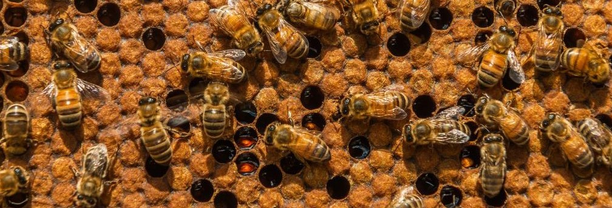
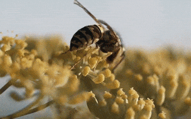

Bees
Are a definite nessesity in the circle of life. Whether it would be maintaining it's own population, bees are struggling to defend themselves.
"Bee extinction worries grow as spieces numbers drop. The number of reported bee spieces has dropped 25% from the 1990s." -by Laura Millian Lombrana
What the Bees are?
Bees are insects with wings closely related to wasps and ants, known for their role in pollination and, in the case of the best-known bee species, the western honey bee, for producing honey. There are over 16,000 known species of bees in seven recognized biological families. Some species including honey bees, bumblebees, and stingless bees live socially in colonies while most species including mason bees, carpenter bees, and sweat bees are solitary.
Bees are found on every continent except for Antarctica, in every habitat on the planet that contains insect-pollinated flowering plants. The most common bees in the Northern Hemisphere are the Halictidae, or sweat bees. Bees range in size from tiny stingless bee species, whose workers are less than 2 millimetres (0.08 in) long, to Megachile pluto, the largest species, whose females can attain a length of 39 millimetres

Bees feed on nectar and pollen, the former primarily as an energy source and the latter primarily for protein and other nutrients. Most pollen is used as food for their larvae. Vertebrate predators of bees include primates and birds such as bee-eaters; insect predators include beewolves and dragonflies.
Bee pollination is important both ecologically and commercially, and the decline in wild bees has increased the value of pollination by commercially managed hives of honey bees. The analysis of 353 wild bee and hoverfly species across Britain from 1980 to 2013 found the insects have been lost from a quarter of the places they inhabited in 1980.
Read more…